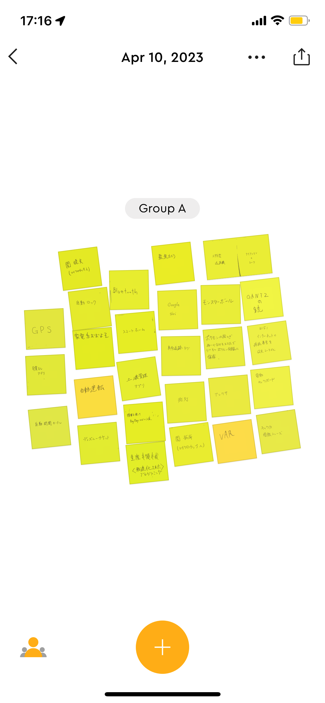
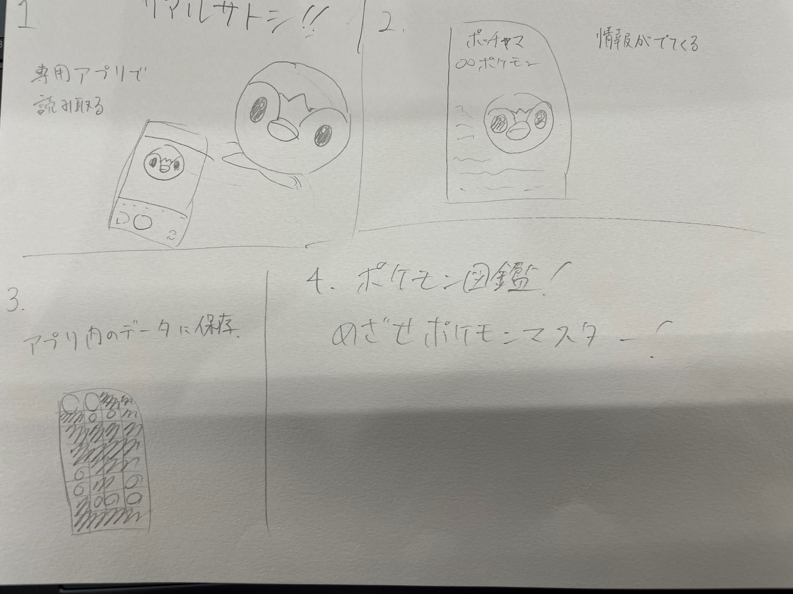

IoTとはInternet of Things（インターネットオブシングス）の略で
モノ同士をインターネットでつなぐことを意味する
たとえば街でよく見かける自転車貸し出しシステムなんかはIoTを用いているといえる。
あれは私たちのケータイと自転車をインターネットを通じてつながっているからだ。
ほかにもGPSやスマート家電なんかが当てはまる。
IoTで何ができるのかをグループで話し合って出した案が以下の写真である。

また、この出た案の中から自分ができそうで面白そうだなと思ったモノをスケッチしたものがこれである。

ポケモンの絵やぬいぐるみをスマホで移すと認識し、ポケモン図鑑を埋めることができるというもの。
これはポケモンのぬいぐるみとスマホをインターネットでつないだIoTのものであると思った。